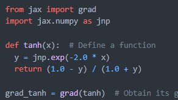
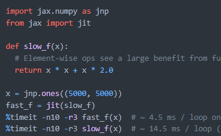

Jax - Good, Better, Atrocious
Kaze Wong
- Autodiff
- JIT compilation
- Simple vectorization
- GPU with XLA


import jax.numpy as jnp
def f(x):
return x ** x
x = jnp.arange(1, 10)
f(x)
import jax.numpy as jnp
import jax
def f(x):
return x ** x
x = jnp.arange(1,10.)
df = jax.grad(f)
print("Check grad(f): ",df(3.) == (1+jnp.log(3.))*f(3.))
print("Try grad of f on array: ", df(x))
import jax.numpy as jnp
import jax
def f(x):
return x ** x
x = jnp.arange(1, 10.)
df = jax.vmap(jax.grad(f))
print("Try grad of f on array: ", df(x))
import jax.numpy as jnp
import jax
def f(x):
return x * x + 2 * x
x = jnp.ones((5000,5000))
fast_f = jax.jit(f)
print("Bechmarking f(x)...")
%timeit f(x)
print("Bechmarking fast_f(x)...")
%timeit fast_f(x)
import jax.numpy as jnp
import jax
def f(x):
return x * x + 2 * x
x = jnp.ones((5000,5000))
cpu_f = jax.jit(f, backend="cpu")
gpu_f = jax.jit(f, backend="gpu")
print("Bechmarking cpu_f(x)...")
%timeit cpu_f(x)
print("Bechmarking gpu_f(x)...")
%timeit gpu_f(x)